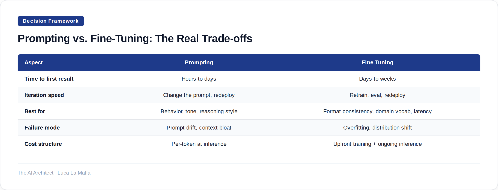

Most teams reach for fine-tuning too early. Here is how to think through the decision systematically.
August 1, 2026
Three months ago a client came to me with a model that cost them €40,000 to fine-tune. It answered in the right tone, used their internal taxonomy correctly, and generally behaved the way they wanted. It also couldn't handle questions outside its training distribution, required a full retraining cycle every time their product changed, and was already drifting behind the base model's capability improvements. When I asked why they hadn't tried a well-engineered system prompt first, the answer was: "We assumed fine-tuning would be more accurate." That assumption is the source of a lot of wasted money in enterprise AI right now.
The prompting-vs-fine-tuning decision is genuinely consequential, and it's not as obvious as either camp makes it sound. Prompting advocates sometimes pretend context windows solve everything. Fine-tuning advocates sometimes treat it as a universal quality lever. Neither is right. The answer depends on what problem you're actually solving, and most teams don't diagnose that carefully enough before picking a path.

The clearest signal that prompting is the right first move: your problem is behavioral. You want the model to reason differently, follow a specific persona, apply a rubric, or stay within a topic boundary. All of that lives in the prompt. A well-structured system prompt with a few good examples — what people call few-shot prompting — can close most behavioral gaps between a raw model and what you need. I've replaced fine-tuned models with a 400-token system prompt and a handful of examples more than once, with equivalent or better output quality and a fraction of the maintenance burden.
Fine-tuning earns its place in a narrower set of situations. The canonical one: you need consistent structured output at scale and the format is complex enough that even with explicit instructions and examples, the base model occasionally breaks it. Another legitimate case is latency — a smaller fine-tuned model can match a larger prompted model on a narrow task while costing significantly less per call. And there's vocabulary: if your domain uses terms, abbreviations, or naming conventions that simply don't appear in the base model's training data, prompting alone won't make them stick. But notice these are all relatively specific, measurable problems — not vague quality concerns.
The failure mode I see most often isn't choosing the wrong option — it's skipping the diagnostic step entirely. Teams observe that the model output isn't quite right, conclude the model "doesn't understand" their domain, and immediately reach for fine-tuning as the fix. But "doesn't understand" usually means one of three things: the prompt is ambiguous, the examples are poor, or the task is genuinely outside the model's capability regardless of tuning. Fine-tuning fixes none of those. It can memorize your examples, but memorization isn't generalization, and a fine-tuned model that's been trained on ambiguous signal will fail ambiguously at scale.
There's also a maintenance cost that rarely appears in the initial business case. A fine-tuned model is a snapshot. The base model it was derived from keeps improving; your fine-tune doesn't automatically inherit those improvements. Every major base model release is a potential retraining event. For a team that ships fast and iterates on product, that's a real drag. Prompting ages better because it sits on top of whatever model you're currently using — swap the model, keep the prompt, re-evaluate. That optionality has real value even if it doesn't show up in a spreadsheet.
My working heuristic: exhaust prompting first, and be genuinely rigorous about it. That means a proper system prompt, representative few-shot examples, and a small eval set you actually run before declaring the approach insufficient. If you've done that and you're still seeing consistent, measurable failure on a well-defined task, then you have a case for fine-tuning. The data requirements alone — typically hundreds to thousands of high-quality labeled examples — are a useful forcing function. If you can't assemble that dataset, you probably don't have the signal clarity that makes fine-tuning worthwhile anyway.
The threshold I set for clients
Before I recommend fine-tuning to any client, I require them to hit a specific bar: a prompted baseline evaluated on at least 100 representative examples, a documented failure analysis showing where and why it breaks, and a dataset of 500+ clean labeled examples ready to go. If any of those three are missing, we keep prompting and fix the gaps first. Most of the time, fixing the gaps in the eval or the prompt is enough — and the fine-tuning project quietly disappears from the roadmap.
anthropics/claude-cookbooks — Examples showing when prompting/tool use suffice vs. when they don't.